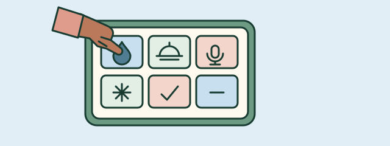
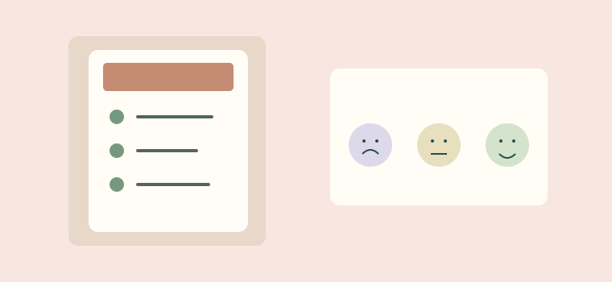

Understand cerebral palsy
Learn about cerebral palsy and the different ways people experience everyday life.
Learn about CPFor people with cerebral palsy, families, and caregivers
Find clear explanations, explore everyday adaptations and assistive technology, and record what helps you—all at your own pace.
Explore what you can do
Why I built Erry
Living with cerebral palsy has meant finding my own ways to approach everyday tasks—and often explaining those experiences to others. I built Erry to share clear information, explore practical adaptations, and create space for the small discoveries that matter to us.
Read my story
Learn about cerebral palsy and the different ways people experience everyday life.
Learn about CP
Explore adaptations for typing, writing, using a spoon, and other everyday activities.
Browse everyday activities
Understand how equipment and accessibility features can support different needs.
Explore support options
Record what you tried, how it felt, and what you would like to explore next.
Open my journalErry connects lived experience with biomedical engineering. The typing activity lets you try a small change and compare what you notice.